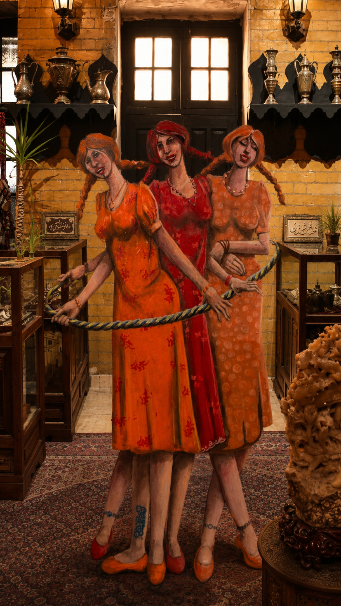
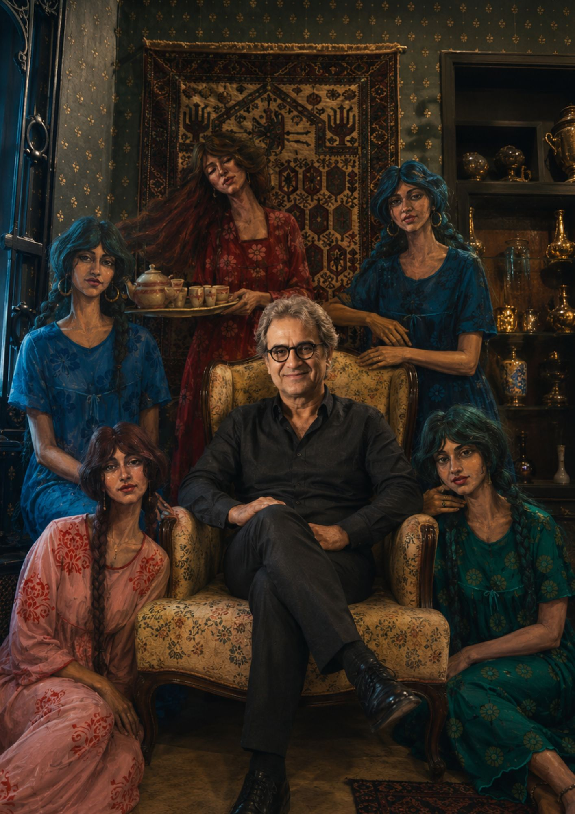
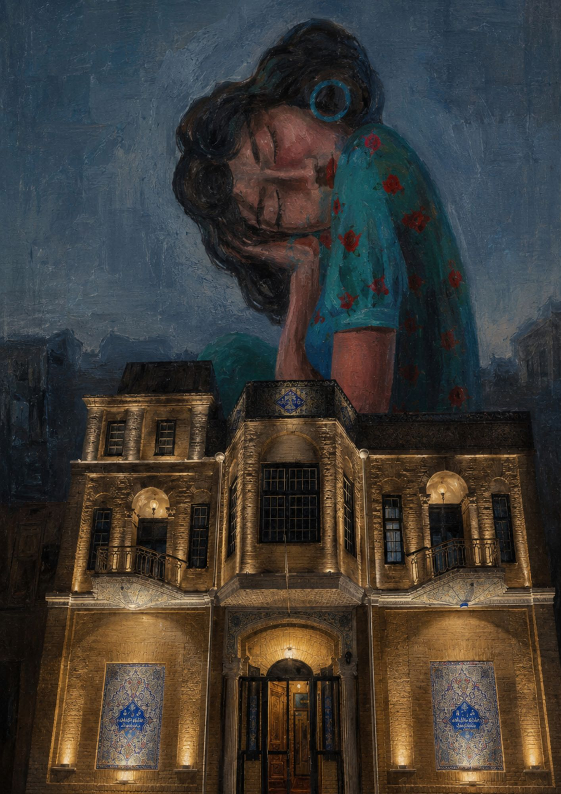
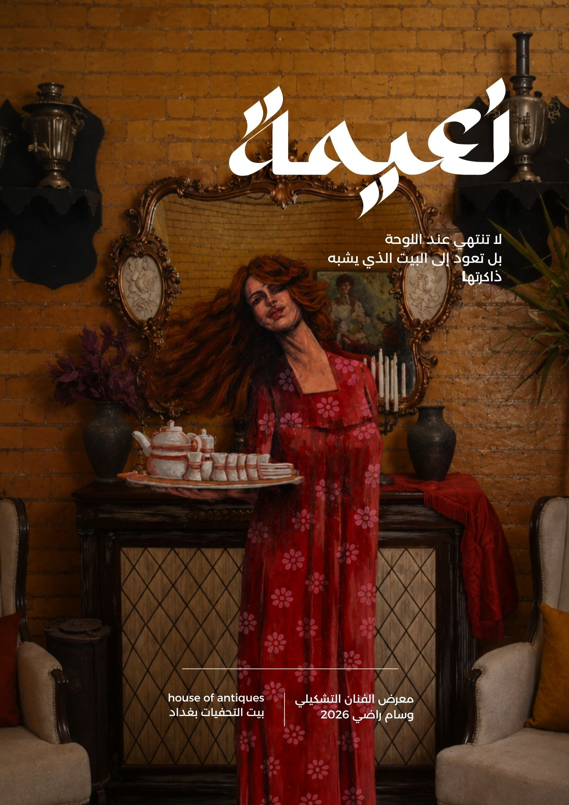
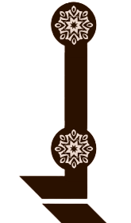

وسام راضي
نعيمة
وجوه من الذاكرة
والأنوثة الشعبية
بيت التحفيات
بغداد — 2026
وسام راضي
الفنان التشكيلي — عضو نقابة الفنانين العراقيين
وسام راضي فنان تشكيلي عراقي، ولد في بغداد عام 1968، وعضو نقابة الفنانين العراقيين. تجمع مسيرته بين الرسم والصحافة الفنية والتدريس، وله معارض شخصية ومشاركات داخل العراق وخارجه، إلى جانب جوائز في الرسم والكاريكاتير.
تتمحور تجربته حول الإنسان والذاكرة والوجوه الشعبية، بأسلوب تعبيري يحمل ملامح عراقية واضحة. في معرض «نعيمة» يقدم الفنان رؤيته الخاصة للمرأة الشعبية كرمز للجمال والذاكرة والأنوثة العراقية.
العضويات والمناصب
- عضو نقابة الفنانين العراقيين.
- عضو جمعية التشكيليين العراقيين.
- عضو نقابة الصحفيين العراقيين.
- عضو اتحاد الصحفيين الدوليين.
- عضو جمعية المصورين العراقيين.
- مستشار تشكيلي لجمعية الصحفيين والمثقفين الأكاديميين العراقيين.
- عضو اتحاد الإذاعيين والتلفزيونيين العراقيين.
- عضو رابطة رسامي الكاريكاتير العراقيين.
- مستشار إعلامي لهيئة التحكيم للمنازعات الدولية / جامعة الدول العربية.
الخبرات والمؤسسات الإعلامية
- محرر ورسام في جريدة الاستقلال.
- محرر ورسام كاريكاتير في جريدة صوت العراق.
- محرر ورسام كاريكاتير في جريدة الدستور.
- رسام كاريكاتير في جريدة البيان.
- محرر ورسام كاريكاتير في جريدة الفلقة الساخرة.
- رسام كاريكاتير في جريدة البينة الجديدة.
- كاتب سيناريو ورسام قصص أطفال في مجلة قيس الإماراتية.
- كاتب سيناريو ورسام قصص أطفال في مجلة تموز العراقية.
- رسام لمحاكمة الجنود الأمريكيين في المحكمة الأمريكية بالمنطقة الخضراء في بغداد، بإشراف وكالة NBC.
- مدير معهد بيكاسو في بغداد لتعليم فن الرسم والموسيقى.
المعارض الشخصية
- المعرض الشخصي الأول «مانيات» في المركز الثقافي في ديالى.
- المعرض الشخصي الثاني «كائنات خارج الكلام» في مركز بغداد للفنون — 2000.
- المعرض الشخصي الثالث «تعبيريات» في كنيسة بمدينة إيسن في ألمانيا — 2018.
المشاركات الفنية
- المشاركة في معرض في مورثا — إسبانيا.
- المشاركة في معرض «الفن للإنسانية والسلام» لتجمع التشكيليين العراقيين.
- المشاركة في معرض «الديمقراطية والسيادة الوطنية» لتجمع التشكيليين العراقيين.
- المشاركة في معرض «أفكار» لتجمع أفكار للفنون في فندق الشيراتون.
- المشاركة في معارض الكاريكاتير بمناسبة عيد الصحافة العراقي.
- المشاركة في معرض الكاريكاتير على قاعة الفنون التشكيلية لمنتدى بغداد الثقافي.
- المشاركة في معرض «أتاتورك» في إسطنبول — تركيا.
- المشاركة في معرض «نيس للفنون» السنوي في مدينة نيس الفرنسية — 2018.
الجوائز
- جائزة عالمية لأفضل عمل كاريكاتيري في مسابقة مؤسسة «فاميجيا فارسيليا» الإيطالية المتخصصة برسوم الكاريكاتير — 2001.
- جائزة جميل حمودي للرسامين الشباب — 2001.
- جائزة حافظ الدروبي في معرض مشترك لمجموعة من الرسامين العراقيين.
- جائزة الحزب الشيوعي العراقي لأفضل رسام في المسابقة — 2005.

أعمال نعيمة
مختارات من أعمال الفنان وسام راضي

بيت التحفيات ذاكرة المكان
داخل بيت التحفيات، لا تُعرض الأعمال الفنية بوصفها لوحات منفصلة عن محيطها، بل كجزء من ذاكرة مكان حي، يحمل بين جدرانه تفاصيل من التراث، الحكاية، والذائقة العراقية القديمة.
يمنح بيت التحفيات معرض «نعيمة» فضاءً مختلفاً؛ فالأعمال لا تقف أمام جدار أبيض محايد، بل تتحاور مع الخشب، النحاس، السجاد، الضوء، والتحف التي تحمل أثر الزمن.
هذا التداخل بين العمل الفني والمكان يخلق تجربة بصرية أقرب إلى المشهد المسرحي، حيث تتحول الشخصيات المرسومة إلى جزء من البيت، وكأنها خرجت من ذاكرته.
اختيار بيت التحفيات لاحتضان هذا المعرض امتداد لفكرة المعرض نفسها:
وجوه من الذاكرة،
وأنوثة شعبية تجد مكانها الطبيعي وسط فضاء يحفظ ملامح الماضي.

وسام راضي
الفنان التشكيلي
بالشراكة مع
مؤسسة مصدر للتنمية المستدامة
الشريك في المعرض

مؤسسة مسمار
الشريك في المعرض
معرض «نعيمة»
وسام راضي
بغداد — 2026